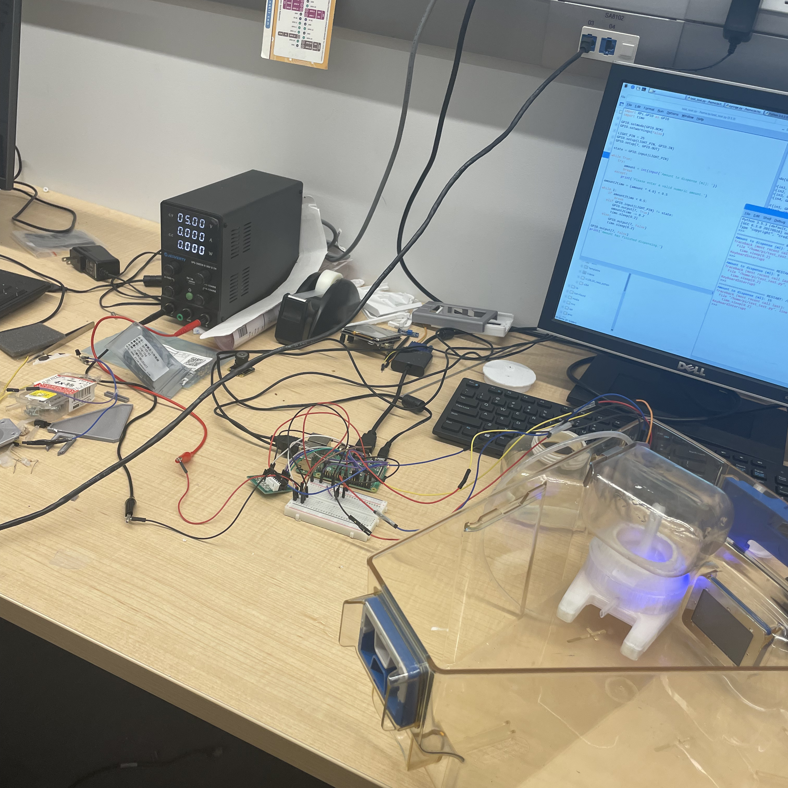
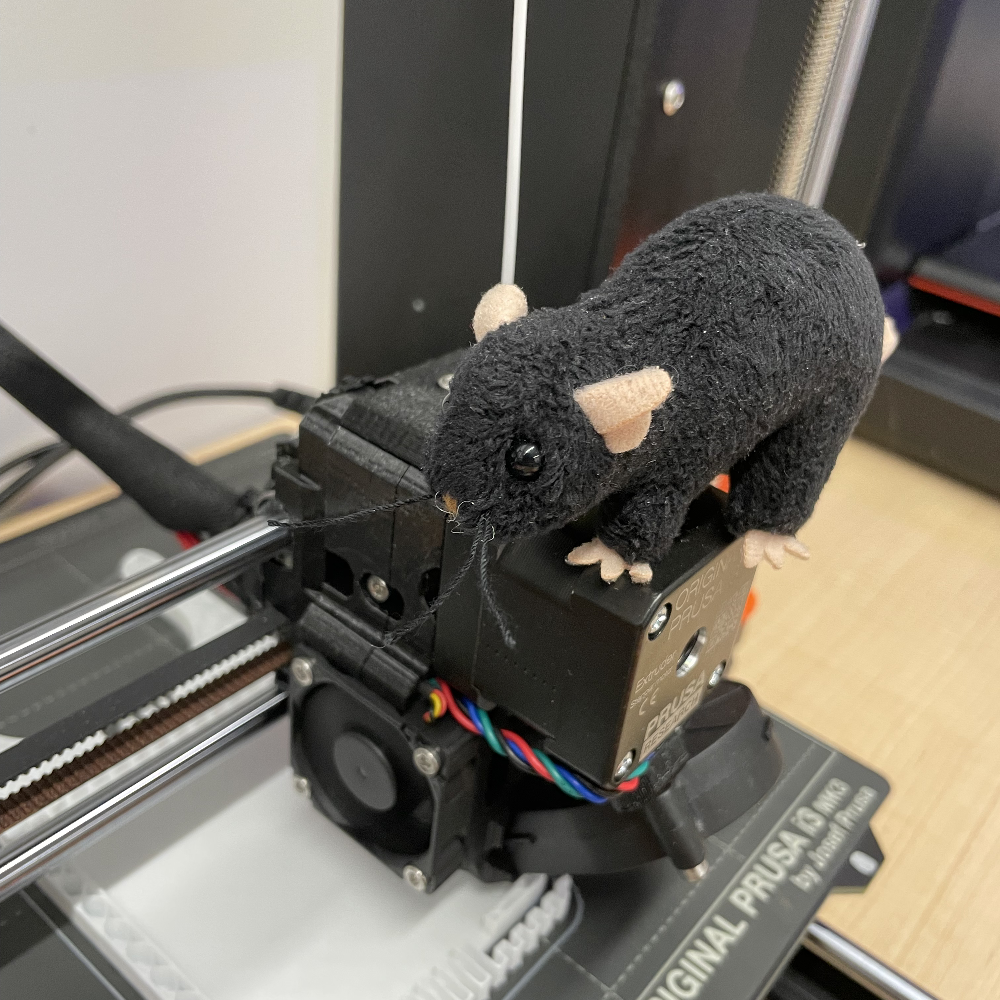
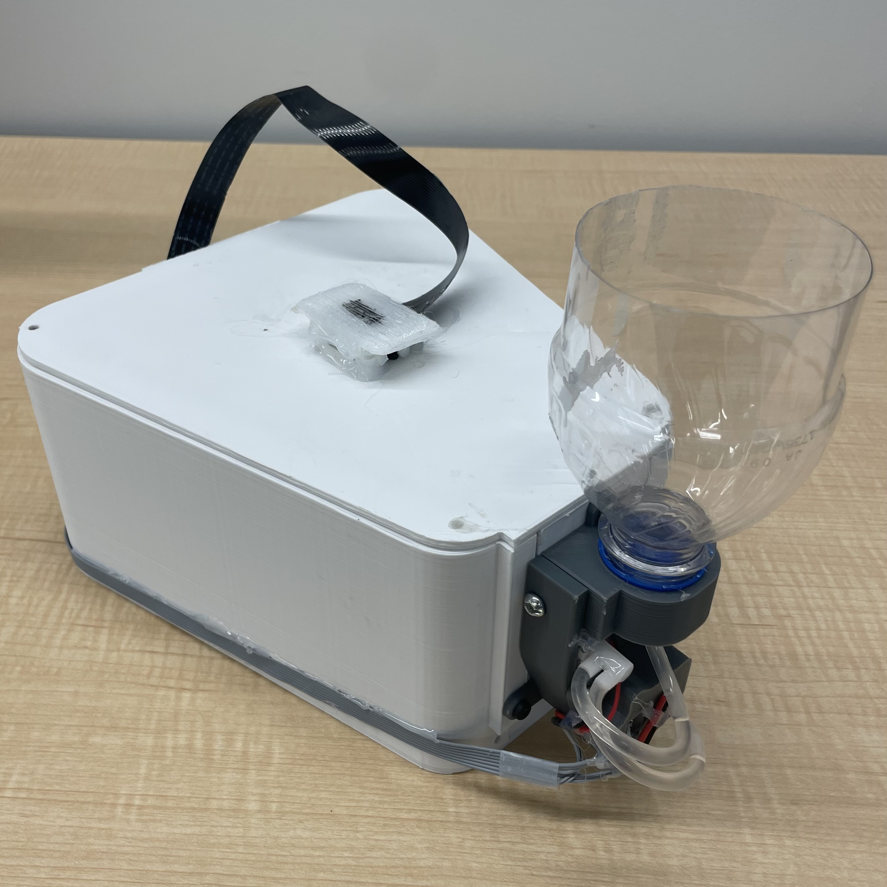
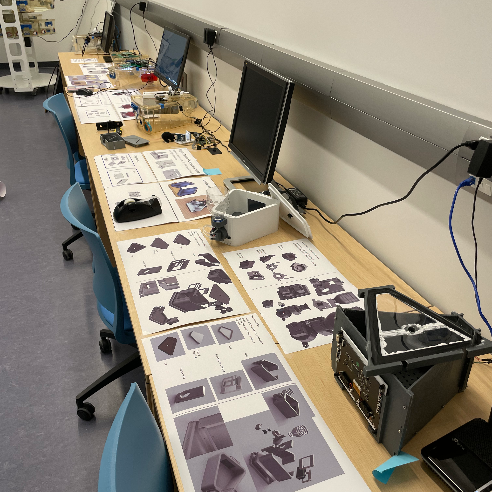

Neurocage Systems
Mechanical Engineering Intern
January 2023 — April 2023
•
Calgary, AB
Three person team focused on autonomous husbandry systems for neurological research.
Designed systems to assist post-doc studies at the University of Lethbridge. Some examples include automatic feed systems with water and food detection, and behavioural testing boxes.



